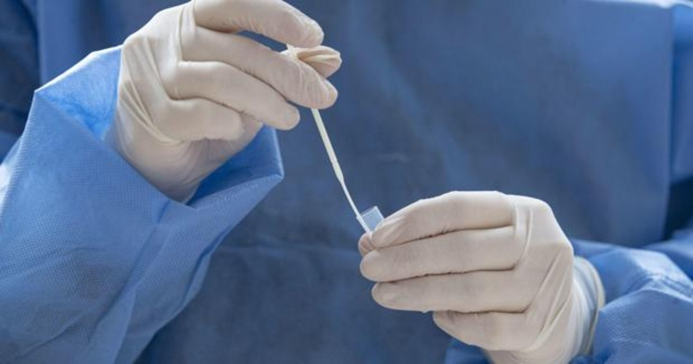
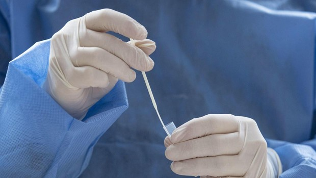

¿Por qué se usan los test anales en la detección del coronavirus?
El avance en los métodos de detección del coronavirus se presenta como uno de los puntos clave para el control de la epidemia.Entre estos avances se encuentra el hecho de poder detectar antes y de manera más fiable la presencia del virus en el organismo.La última manera de hacerlo son los test anales o rectales.
Este tipo de test ya se vienen utilizando de manera habitual para la detección de otras patologías, pero su uso en la detección del SARS-CoV-2 ha sido la novedad de los últimos días.De hecho estas pruebas ya están extendidas en China incluso para visitantes extranjeros y en España ya se han utilizado en Galicia, según recoge hoy el diario «El Correo».
La evidente diferencia con respecto a otros tipos de test es su método de extracción de la muestra que, según ha trascendido de testimonios de pacientes, se extrae por vía rectal en un proceso que dura unos segundos.La mayoría de los test que se han visto hasta ahora, como las PCR o los test de antígenos, se toman por vía nasofaríngea con un frotis que toma muestras del virus.
A priori, estos test rectales suponen un método más invasivo para el paciente, pero según el criterio de expertos puede suponer una mejora en la detección de la presencia del virus en personas infectadas.Según este criterio, el virus es detectable durante más tiempo en el ano que en las vías respiratorias, por lo que se podrían detectar pacientes positivos en una ventana de tiempo mucho más amplia.
Estos test anales no representan en sí una mejora considerable en la detección de positivos, ya que otras pruebas como la PCR pueden llegar a ser igual de fiables.La mejora radica en que se podría llegar a detectar el coronavirus durante más días, lo que puede ayudar al control de la epidemia.
Posted On: 2021-02-01T00:00:00


Content Date: 2021-02-01
Download Date: 2021-04-08
Document ID: L0C049JMB